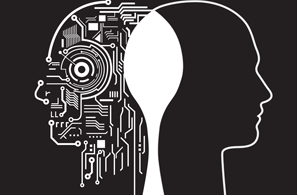

definition of artificial intelligence
links:
AI is the branch of computer science that aims to answer Turing's question in the affirmative. It is the endeavor to replicate or simulate human intelligence in machines.
The expansive goal of artificial intelligence has given rise to many questions and debates. So much so, that no singular definition of the field is universally accepted.
The major limitation in defining AI as simply "building machines that are intelligent" is that it doesn't actually explain what artificial intelligence is? What makes a machine intelligent?
In their groundbreaking textbook Artificial Intelligence: A Modern Approach, authors Stuart Russell and Peter Norvig approach the question by unifying their work around the theme of intelligent agents in machines. With this in mind, AI is "the study of agents that receive percepts from the environment and perform actions." (Russel and Norvig viii)
Norvig and Russell go on to explore four different approaches that have historically defined the field of AI:
Thinking humanly
Thinking rationally
Acting humanly
Acting rationally
Artificial intelligence generally falls under two broad categories:
Narrow AI: Sometimes referred to as "Weak AI," this kind of artificial intelligence operates within a limited context and is a simulation of human intelligence. Narrow AI is often focused on performing a single task extremely well and while these machines may seem intelligent, they are operating under far more constraints and limitations than even the most basic human intelligence.
Artificial General Intelligence (AGI): AGI, sometimes referred to as "Strong AI," is the kind of artificial intelligence we see in the movies, like the robots from Westworld or Data from Star Trek: The Next Generation. AGI is a machine with general intelligence and, much like a human being, it can apply that intelligence to solve any problem.

types of artificial intelligence:
Arend Hintze, an assistant professor of integrative biology and computer science and engineering at Michigan State University, explained in a 2016 article that AI can be categorized into four types, beginning with the task-specific intelligent systems in wide use today and progressing to sentient systems, which do not yet exist. The categories are as follows:
Type 1: Reactive machines.
These AI frameworks have no memory and are task explicit. A model is Deep Blue, the IBM chess program that beat Garry Kasparov during the 1990s. Dark Blue can distinguish pieces on the chessboard and make forecasts, but since it has no memory, it can't use past encounters to advise future ones.
Type 2: Limited memory.
These AI systems have memory, so they can use past encounters to educate future choices. A portion of the dynamic capacities in self-driving vehicles are planned along these lines.
Type 3: Theory of mind.
Hypothesis of brain is a brain science term. At the point when applied to AI, it implies that the system would have the social intelligence to get feelings. This kind of AI will have the option to deduce human intentions and predict behavior, a necessary skill for AI systems to become integral members of human teams.
Type 4: Self-awareness.
In this category, AI systems have a sense of self, which gives them consciousness. Machines with self-awareness understand their own current state. This type of AI does not yet exist.
dangerous of AI:
The AI is modified to accomplish something annihilating: Autonomous weapons are artificial intelligence systems that are customized to murder. In the hands of an inappropriate individual, these weapons could without much of a stretch reason mass losses. Besides, an AI weapons contest could accidentally prompt an AI war that likewise brings about mass setbacks. To abstain from being foiled by the adversary, these weapons would be intended to be amazingly hard to just "turn off," so people could conceivably lose control of such a circumstance. This hazard is one that is available even with thin AI, yet develops as levels of AI intelligence and independence increment.
The AI is customized to accomplish something beneficial, yet it builds up a dangerous strategy for accomplishing its objective: This can happen at whatever point we neglect to completely adjust the AI's objectives to our own, which is strikingly troublesome. In the event that you ask a submissive shrewd vehicle to accept you to the air terminal as quick as could reasonably be expected, it may get you there pursued by helicopters and shrouded in upchuck, doing not what you needed but rather truly what you requested. In the event that an incredibly smart system is entrusted with a goal-oriented geoengineering venture, it may unleash devastation with our ecosystem as a reaction, and view human endeavors to stop it as a danger to be met.